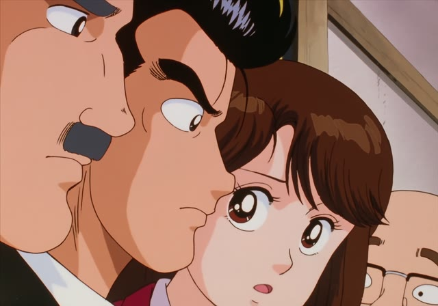
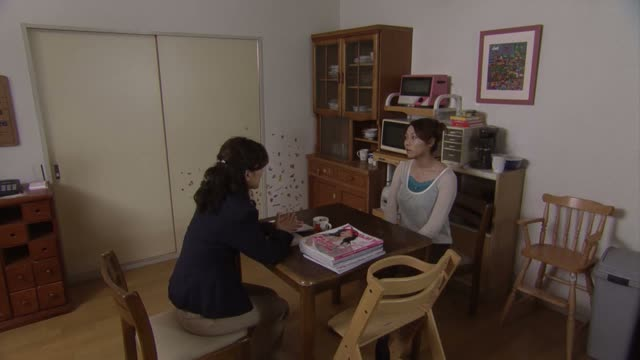
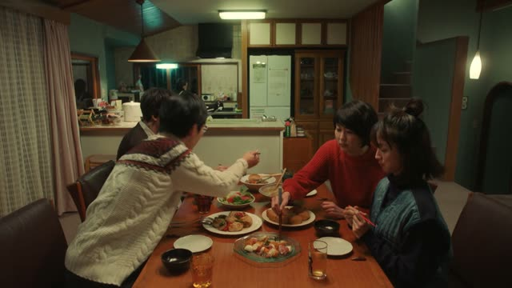

とても

Oishinbo · Episode 10
とてもおいしいです。
"It's very delicious." [tasting the grilled fish]
とても means very. It goes right before the describing word: とても + おいしい = "very delicious".
On this card, she tastes the dish and answers "how good?" with "a lot". Without とても, おいしいです is just "it's delicious".
とても itself never changes. Polite or casual only shows at the end: とてもおいしいです / とてもおいしい.

I am Mita, Your Housekeeper · Episode 8
とてもいいと思うな、あの家族。
"I think that family is really nice."
とても goes before the word it makes stronger. On this card, とても + いい ("good") = "really nice", and the topic, あの家族 ("that family"), comes at the end as an afterthought.
Quick Examples
Small talk with a neighbour on a winter morning.
今日はとても寒いですね。
"It's very cold today, isn't it."
PoliteSomeone asks what your hometown is like.
とても静かな町です。
"It's a very quiet town."
Before a noun, とても still sits in front of the describing word: とても静かな + 町.
PoliteYou get home after a long day of moving boxes.
とても疲れた。
"I'm really tired."
とても also works with feeling words that are verbs: 疲れる, 困る, 驚く.
CasualA friend lets you try their curry.
とってもおいしい！
"Super tasty!"
とても sounds a little neat. With friends, people often say とっても (warmer, stronger) or すごく instead.
CasualWith and without
この本は面白いです。
"This book is interesting." A plain fact.
この本はとても面白いです。
"This book is very interesting." You really mean it.
Examples from Media
Howl's Moving Castle
あの子はとても危険です。
"That boy is very dangerous."
とても + 危険 = "very dangerous". とても sits right before the describing word.
Kekkon Dekinai Otoko · Episode 1
そうですか とても残念です。
"I see. That's a real shame."
Aggretsuko · Season 1, Episode 9
私 今 とっても幸せです。
"I'm really happy right now."

1 Litre of Tears · Episode 2
とっても大切なことなんですよ。
"It's a very important thing."
とっても is とても with extra feeling.

Quartet · Episode 8
心というのは とても弱いものです。
"The heart is a very weak thing."

Shirokuma Cafe · Episode 22
ありがとう、とっても嬉しい！
"Thank you, I'm so happy!"
とっても is a warmer とても.

Shirokuma Cafe · Episode 16
当たりはずれがとても大きい。
"It's very hit or miss."
とても + an adjective.
Teasing Master Takagi-san · Season 2, Episode 11
とっても酸っぱいのさ。
"It's really sour."
とっても: a spoken とても.